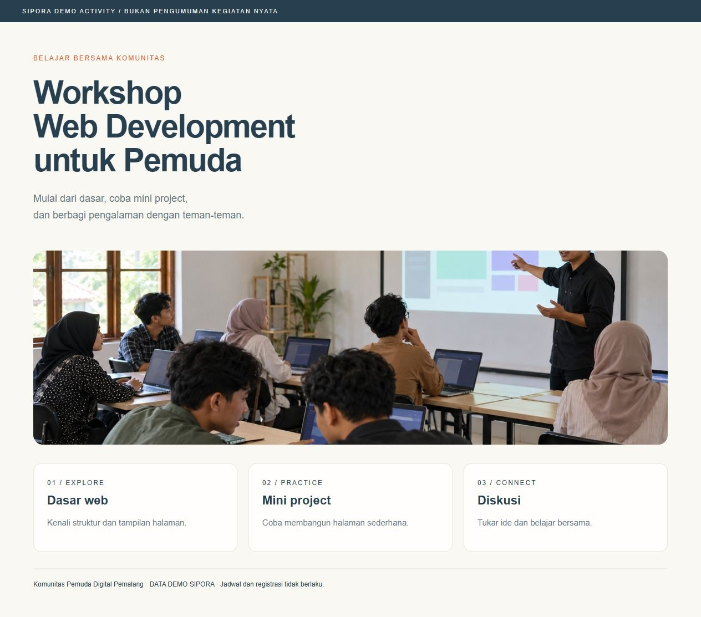
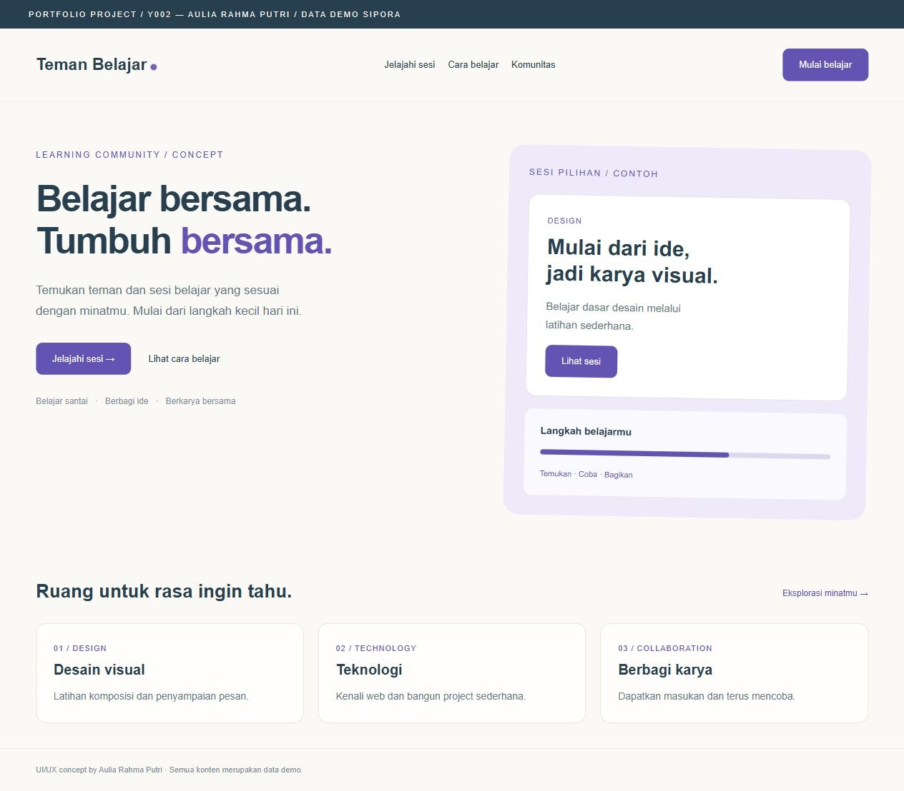
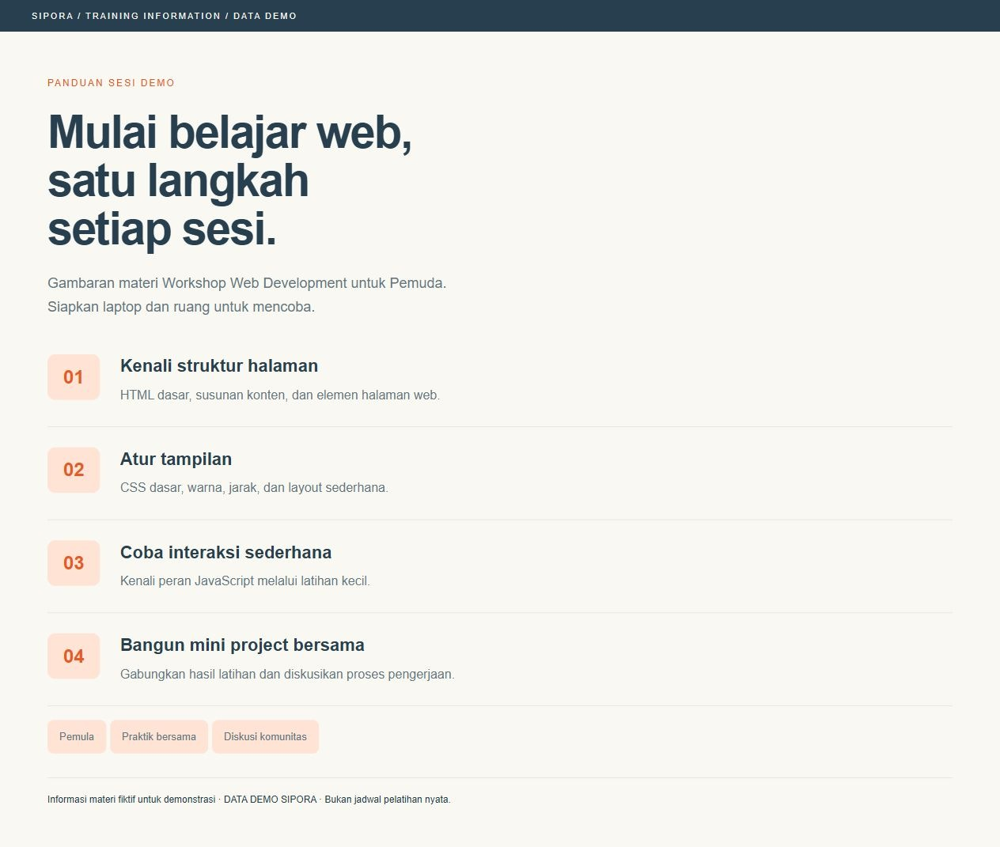

THREAD001 / Teknologi & BelajarAda rekomendasi belajar Laravel untuk pemula?
Erik Kusuma Rais
Saya baru mulai memahami pengembangan web dan ingin belajar Laravel dengan lebih terarah. Buat teman-teman yang pernah mulai dari nol, biasanya belajar lewat materi seperti apa? Boleh berbagi pengalaman dan cara membagi waktu latihan.
Tanpa attachment
THREAD002 / Kegiatan & KomunitasAda yang mau ikut Workshop Web Development minggu ini?
Erik Kusuma Rais
Saya sedang mencari teman untuk ikut Workshop Web Development untuk Pemuda. Materinya mulai dari dasar dan ada praktik mini project bersama. Kalau ada yang tertarik, kita bisa berdiskusi dulu di thread ini. Detail kegiatan ada di Activity A001.

THREAD003 / Karya & FeedbackMinta feedback untuk desain landing page saya
Aulia Rahma Putri
Ini konsep landing page Teman Belajar yang sedang saya buat. Saya ingin halaman pembukanya terasa sederhana dan ramah untuk pemula. Menurut teman-teman, apakah judul, tombol utama, dan kartu kategorinya sudah mudah dipahami? Masukan soal jarak dan urutan konten juga sangat membantu.

THREAD004 / Kegiatan & KomunitasAda yang ingin ikut diskusi project kecil bareng komunitas?
Erik Kusuma Rais
Kami ingin mulai dari project web yang sederhana dan bisa dikerjakan bersama. Tidak harus sudah mahir; yang penting mau mencoba dan berbagi proses. Kalau punya ide atau ingin mencari teman belajar, tulis di sini ya. Foto ini adalah contoh suasana diskusi komunitas.
THREAD005 / Teknologi & BelajarApa yang perlu disiapkan sebelum ikut workshop web development?
Nabila Putri Anjani
Saya tertarik mengikuti workshop web development, tapi belum punya banyak pengalaman. Dari gambaran materi yang dilampirkan, bagian mana yang sebaiknya saya kenali lebih dulu? Boleh berbagi tips persiapan supaya lebih nyaman mengikuti praktik.
